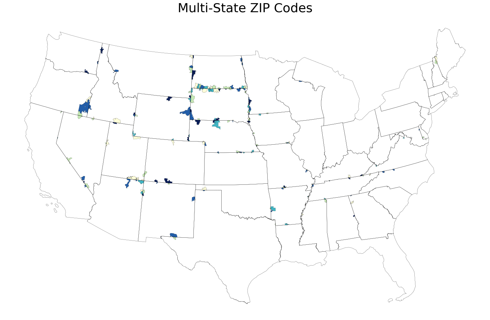

Why does this tool exist?¶
ZIP codes are ubiqitous in daily lives – mailing packages, verifying your ZIP code when using your credit card, using Google Maps, and so on. So you would think that the Census Bureau (which conducts, of course, the Census, but also supplemental surveys like the American Community Survey, or ACS) would report its data on a ZIP code basis. And to some degree, it does. You can look up data for any ZIP code you would like right on the Census Bureau’s website.
However, this published data is all aggregated. Sometimes, as researchers, we want the microdata, which is the raw data collected from the ACS. However, by federal law, the Census Bureau must take precautions to avoid publishing potentially identifying information for 72 years after data collection. So while they do helpfully publish microdata from the ACS, they do not identify the ZIP code of the respondent. This is because some ZIP codes are extremely small – 05141, for example, represents Cambridgeport, Vermont, a town of only 112 people! And since the American Community Survey literally collects every piece of demographic information you can imagine (ancestry, how many cars you have, what kind of broadband you have, etc.) it wouldn’t be too hard to figure out exactly the identity of a respondent.
The other reason the Census Bureau doesn’t publish data on a ZIP code basis is that ZIP codes actually are not geographical areas – they represent mail routes. They’ve sort of been retooled and misused for geographic areas, the same way Social Security numbers have ended up being used as federal identifiers despite that not at all being the intention. Because of this, ZIP codes aren’t quite as geographically clean as we think they are. For example, some ZIP codes refer not to locations but mail routes – 02912, for example, simply represents Brown University’s central mail room from which mail is distributed across the university by Brown itself and not the postal service. And some ZIP codes even span multiple states, as shown below!
{kind=link}
For both of the above reasons, the Census Bureau publishes microdata not by ZIP code, but by Public Use Microdata Areas, commonly known as PUMAs. These are actual geographic regions that are designed to have 100,000 residents each, which the Census Bureau deems large enough to main anonymity. That means that we can obtain approximate microdata data for a ZIP code by querying its PUMA – should be easy, right?
Well, not quite. As we discussed before, ZIP codes are not geographic areas, but mail routes, so it’s not like there’s a one-to-one conversion between PUMA and ZIP. Thankfully, the U.S. Department of Housing and Urban Development (HUD) publishes the HUD-USPS ZIP Code Crosswalk which allows us to convert ZIP codes to census tracts. This is good because we now have actual geographical boundaries for a given ZIP code, but census tracts are distinct from PUMAs and again are not 1:1 related. That means the final step is computing the geographical intersection between census tracts and PUMA using shape files provided by the Census Bureau. At this point, we can query approximate data by ZIP code from the American Community Survey.
So, in summary, what does this tool actually do? It works through these messy geographical conversions (ZIP -> census tract -> PUMA) to pull out approximate data from the ACS on a ZIP code level.